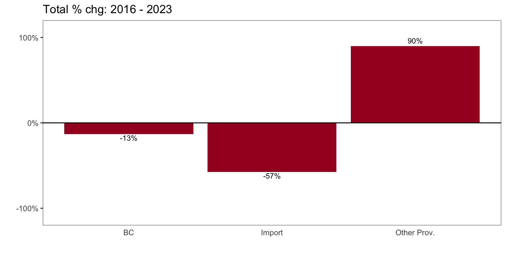

Data goes back to 2015 (BC LDB Fiscal Year 2016, since fiscal yr ends in March).
As mentioned in previous articles:my expertise is in data analysis, not the liquor industry, so the emphasis is on exploring what the data can tell us. Industry-insider context may be lacking. In the interest of promoting data analysis and learning, I am sharing most of the R code used to process the data - hence the expandable ‘Code’ options.
Beer Sales Trends
Overview
We’ll start with an annual overview across all beer categories and then look at trends for individual categories further down below.
Beer sales have been pretty stable over the last few years, with net $ sales peaking in 2017, recovering in 2022 in line with inflation. Overall slight downward trend, most noticeable in litre consumption.
Code
# dual axis - not usually recommended but works ok herech_title <-"BC Beer: Net Sales $ + Litre Sales trend"trend_yr %>%ggplot(aes(x=as.factor(year), y=netsales, group=1))+geom_line(color=bar_col, size=2)+geom_smooth(aes(y=netsales), method='lm', se=FALSE, color='brown', linetype='solid', size=1)+geom_point(aes(y=netsales), color=bar_col, size=3)+geom_line(aes(x=as.factor(year), y=litres*3), size=2, color='royalblue')+geom_smooth(aes(y=litres*3), method='lm', se=FALSE, color='brown')+geom_point(aes(x=as.factor(year), y=litres*3), size=3, color='royalblue')+scale_y_continuous(name='netsales',labels=comma_format(prefix="$", scale=1e-9,suffix="B"), expand=expansion(mult=c(0,0.1)), limits=c(0,max(trend_yr$netsales)),sec.axis =sec_axis(trans=~./3, name='litres',labels=comma_format(scale=1e-6, suffix="M")))+labs(title=ch_title, x="")+theme_classic()+theme(axis.title.y =element_text(color = bar_col, size=13),axis.title.y.right =element_text(color ='royalblue', size=13) )
Breaking out litre sales by quarter confirms the downward trend.
Code
ch_title <-"BC Beer Litre Sales by Qtr, with Trend"trend_yr_qtr %>%ggplot(aes(x=end_qtr_dt, y=litres, group=1))+geom_line(color=bar_col, size=2)+#geom_point(aes(y=litres), color=bar_col, size=3)+geom_smooth(method='lm', se=FALSE)+scale_y_continuous(labels=comma_format(scale=1e-6,suffix="M"), expand=expansion(mult=c(0,0.1)), limits=c(0,max(trend_yr_qtr$litres)))+labs(title=ch_title, x="")
Sales by Category
BC LDB puts beer into 3 major categories for purposes of the Liquor Market Report:
Domestic - BC Beer: beer produced in BC.
Domestic - Other Province Beer: beer produced in Canada outside BC.
Import Beer: beer imported from outside Canada.
Code
# summarize data by year and major categorytrend_yr_cat <- lmr_data %>%group_by(year, category) %>%summarize(netsales=sum(netsales),litres=sum(litres)) %>%filter(year %in% yr_qtr$year) # calc % of yr sales by category# get totals for each yrtrend_yr_ttl <- trend_yr %>%select(year, netsales, litres) %>%rename(ttl_netsales=netsales,ttl_litres=litres )# join with trend_yr_cat to get yr total colstrend_yr_cat <-left_join(trend_yr_cat, trend_yr_ttl, by='year')# calc %trend_yr_cat <- trend_yr_cat %>%mutate(litres_pc=litres/ttl_litres,netsales_pc=litres/ttl_netsales)# add % chg YoY, $/l# ungroup first; use n=3 to lag 3 rows to match categoriestrend_yr_cat <- trend_yr_cat %>%ungroup() %>%mutate(pc_chg_sales=netsales/lag(netsales, n=3)-1,pc_chg_litres=litres/lag(litres, n=3)-1,dollar_per_litre=netsales/litres,pc_chg_d_per_l=dollar_per_litre/lag(dollar_per_litre, n=3)-1)## simplify category names#unique(trend_yr_cat$category)trend_yr_cat <- trend_yr_cat %>%mutate(category=case_when( category=='Domestic - BC Beer'~'BC', category=='Domestic - Other Province Beer'~'Other Prov.', category=='Import Beer'~'Import' ))
Litre sales
Looking at litre consumption for these 3 main categories:
volume drops in the BC and Import beer, with other province beer actually increasing.
in % terms, litre market share for BC remained steady just over 75%, while other provinces took their market share out of imports.
Sales by Subcategory within Categories
Each of the main categories above has sub-categories as well. Let’s look at how things break-out there.
BC Beer
Code
trend_yr_subcat <- lmr_data %>%filter(category=='Domestic - BC Beer') %>%group_by(year, subcategory) %>%summarize(netsales=sum(netsales),litres=sum(litres)) %>%filter(year %in% yr_qtr$year)# calc % of yr sales by category# get totals for each yrtrend_yr_ttl_sub <- trend_yr_subcat %>%select(year, netsales, litres) %>%group_by(year) %>%summarize(ttl_netsales=sum(netsales),ttl_litres=sum(litres) ) # join with trend_yr_cat to get yr total colstrend_yr_subcat <-left_join(trend_yr_subcat, trend_yr_ttl_sub, by='year')# calc %trend_yr_subcat <- trend_yr_subcat %>%mutate(litres_pc=litres/ttl_litres,netsales_pc=litres/ttl_netsales)# simplify subcategory namestrend_yr_subcat <- trend_yr_subcat %>%mutate(subcat=str_replace(subcategory, "Domestic - BC ",""),subcat=str_replace(subcat, " Beer",""))
questions
breakdown by major category
by year -> $ sales and litre sales
changes in composition?
yoy change
within each major category
annual trends -> $ sales and litre sales
changes in composition?
yoy change -> what are the biggest gainers / losers?
Overlay of $ sales data for quarter of each year to see overall trends:
sales are mostly even in Q2 (Jul-Aug-Sep) and Q3 (Oct-Nov-Dec), covering most of the summer and the Christmas holiday season.
Q4 (Jan-Feb-Mar) by far the slowest period.
Code
ch_title <-"$ Sales Comparison by Quarter (fiscal yr end Mar 31)"plot <- trend_ttl_qtr %>%ggplot(aes(x=qtr, y=netsales, color=factor(fyr), group=fyr))+geom_line()+geom_point()+geom_line(data=trend_qtrs, aes(x=qtr, y=avgsales, group=1), color='black', size=1.5)+scale_y_continuous(labels=label_comma(scale=1e-6, prefix="$", suffix="M"), expand=expansion(add=c(0,0.1)), limits=c(0,max(trend_ttl_qtr$netsales)))+labs(title=ch_title, x="", y="Net $ Sales", color='fiscal yr')ggplotly(plot)
BC LDB fiscal yr end Mar 31, so Q1=Apr-May-Jun, and so on; black line = average.
The drop from Q3 to Q4 is the only consistent pattern across the years looked at. Relative level of sales between Q1-Q2 and Q2-Q3 varies from year to year.
Looking at patterns in % change between quarters confirms that either ends of the fiscal yr have the biggest changes:
Q4 has a consistently large drop from previous quarter and Q1 has consistently big increase from previous quarter.
Q2 tends to show positive growth over Q1, but not always. Q3 straddles 0% change from previous.
Code
ch_title <-"Distribution of % Change in $ Sales Between Quarters"plot <- trend_qtr %>%ggplot(aes(y=pc_chg_sales, x=qtr))+geom_boxplot(fill=bar_col)+scale_y_continuous(labels=percent_format())+geom_hline(yintercept =0, linetype='dotted')+labs(title=ch_title, x="",y="% chg from prev quarter")ggplotly(plot)
The middle black line represents median for each quarter, with the colored area representing the range from 25% of the time to 75% of the time (1st & 3rd quartiles).
Litres
Overlaying litres sold by quarter for each year shows volume changes throughout the year:
Q2 (Jul-Aug-Sep) has highest sales, edging out Q1 (Apr-May-Jun)
Q3 (Oct-Nov-Dec) sees drop, even with holidays, and then lower again for Q4 (Jan-Feb-Mar)
Code
ch_title <-"Litres Comparison by Quarter (fiscal yr end Mar 31)"plot <- trend_ttl_qtr %>%ggplot(aes(x=qtr, y=litres, color=factor(fyr), group=fyr))+geom_line()+geom_point()+geom_line(data=trend_qtrs, aes(x=qtr, y=avglitres, group=1), color='black', size=1.5)+scale_y_continuous(labels=label_comma(scale=1e-6, suffix="M"), expand=expansion(add=c(0,0.1)), limits=c(0,max(trend_ttl_qtr$litres)))+labs(title=ch_title, x="", y="litres", color='fiscal yr')ggplotly(plot)
BC LDB fiscal yr ends Mar 31
The different pattern compared to $ sales likely represents the shift in drinking habits with the seasons:
peak volume (litres) is in Q2 - beer season, and beer, along with refreshment beverages, are consumer in higher volumes than the other types.
Q3, which is usually even with Q2 in $ sales, has a consistent drop in litre volume compared to Q2, due to shift away from beer/refreshments beverages toward wine and spirits.
Patterns by beverage type are looked at more below.
Percentage changes from one quarter to the next reflect the different quarter-by-quarter patterns for litres.
Code
ch_title <-"Distribution of % Change in Litres Between Quarters"plot <- trend_qtr %>%ggplot(aes(y=pc_chg_litres, x=qtr))+geom_boxplot(fill=bar_col)+scale_y_continuous(labels=percent_format())+geom_hline(yintercept =0, linetype='dotted')+labs(title=ch_title, x="",y="% chg from prev quarter")ggplotly(plot)
Q1 (Apr-May-Jun) typically has around 35% increase over previous Q4
Q2 (Jul-Aug-Sep) tends to be even or slight increase over Q1.
Q3 (Oct-Nov-Dec) big drop around 15% range compared to Q2.
Q4 (Jan-Feb-Mar) usually another ~15% from Q3 to Q4.
By Major Beverage Type
Let’s look at beverage types to see what is going on below the surface of overall trends.
Stacked chart highlights the shifts between Q2 and Q3:
decline in $ sales of Beer and Refreshment Beverages in Q3 almost completely offset by increase in wine and spirits.
Code
trend_qtrs_cat$type <-fct_reorder(trend_qtrs_cat$type, trend_qtrs_cat$avg_netsales)ch_title <-"Breakdown in $ Sales per Qtr by Category"plot <- trend_qtrs_cat %>%ggplot(aes(x=qtr, y=avg_netsales, fill=type))+#geom_col(position='fill')+geom_col()+scale_y_continuous(labels=label_comma(scale=1e-6, prefix="$", suffix="M"), expand=expansion(add=c(0,0.1)))+scale_fill_manual(values=type_color)+labs(title=ch_title, x="",y="Average Net Sales in Qtr (2015-2023)")+theme(axis.ticks.x =element_blank())ggplotly(plot)
Litres
Similar quarter-over-quarter patterns can be seen when looking at litres sold, although the overall differences from one quarter to the next - especially Q2 to Q3 - are larger when measured in litres, since Beer and Refreshment Beverages are consumed in larger quantities than Wine and Spirits.
Beer and, even more-so, refreshment beverages drop from Q1-Q2 (Apr-Sep) to Q3-Q4 (Oct-Mar).
Wine, Spirits have small peak in Q3 (Oct-Dec) - holiday season.
This pattern shows up clearly when looking at the average % breakdown in litres by beverage type:
Code
trend_qtrs_cat$type <-fct_reorder(trend_qtrs_cat$type, trend_qtrs_cat$avg_litres)ch_title <-"Breakdown in Avg Litre per Qtr by Category"trend_qtrs_cat %>%ggplot(aes(x=qtr, y=avg_litres, fill=type))+geom_col(position='fill')+scale_y_continuous(labels=percent_format(), expand=expansion(mult =c(0,0.1)))+scale_fill_manual(values=type_color)+labs(title=ch_title, x="",y="Average % Breakdown by Quarter (2015-2023")+theme(axis.ticks.x =element_blank())

The bulge in % share for Wine and Spirits in Q3 (Sep-Dec), at the expense of Beer and Refreshment Beverages, is apparent.
Part 2 Wrap-up and Next Up
This concludes our look at quarter patterns, including quarters from mid-2015 to mid-2023.
Next-up:
Category trends and patterns: closer look at each of the major beverage types, exploring categories and sub-categories within them, as reported in the Liquor Market Review.
Category 1: Beer: start with beer, because…beer. ;)
Footnotes
Notes on ‘net $ sales’:
the report says “Net dollar value is based on the price paid by the customer and excludes any applicable taxes.”
calculating average net dollar value per litre for beverage categories gives unrealistically low numbers compared to retail prices in BC liquor stores. (Beer at average $4/litre? Not even the cheapest beer on the BC Liquor Stores website.)
there is likely additional factors related to BC LDB pricing structure, wholesaling, etc.
best to consider average net dollar value per litre referred to below as relative indicator.